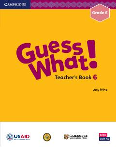

GW6-sinf ingliz tili fani o'qituvchilari uchun metodik qo'llanma.
Ushbu kitob O'zbekiston umumta'lim maktablarining 6-sinf o'qituvchilari uchun mo'ljallangan metodik qo'llanma hisoblanadi. U AQSh Xalqaro taraqqiyot agentligi (USAID) va O'zbekiston Respublikasi Xalq ta'limi vazirligi hamkorligida Cambridge University Press nashriyoti bilan birgalikda moslashtirilgan.